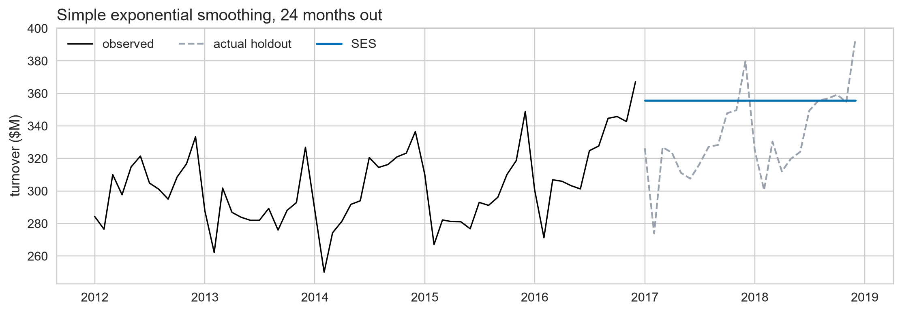
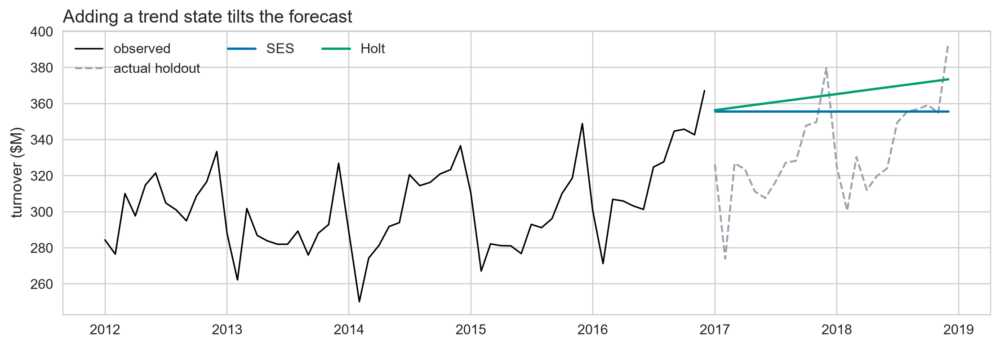
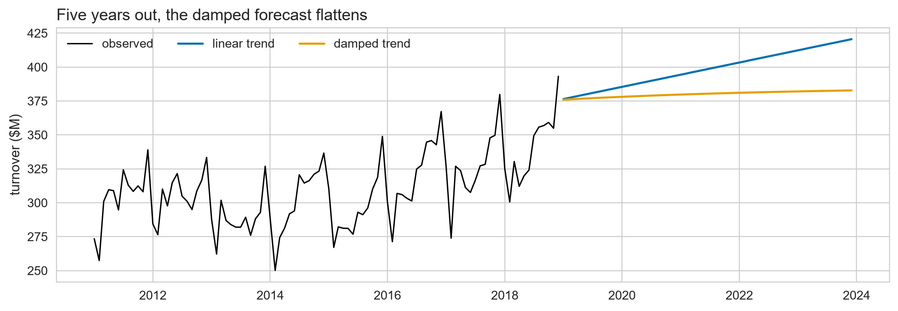
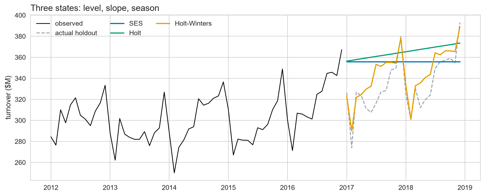
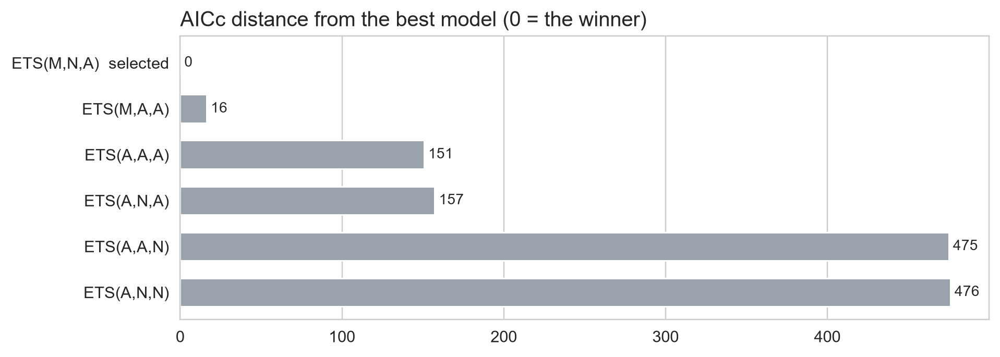
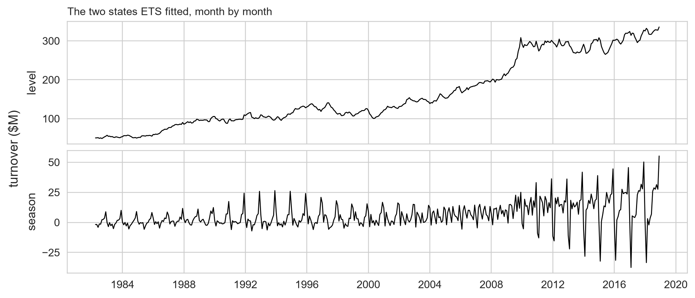
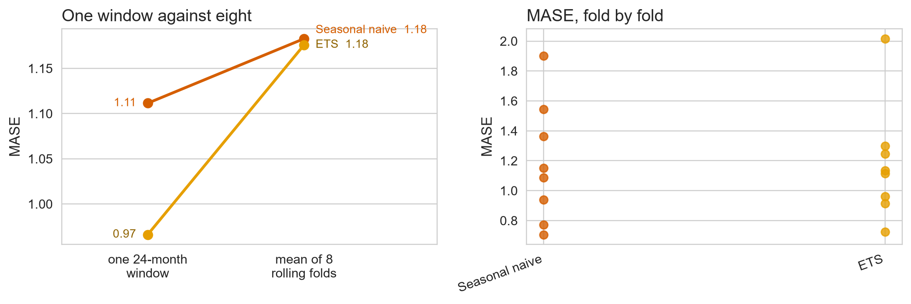
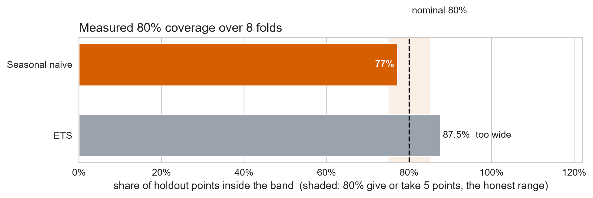
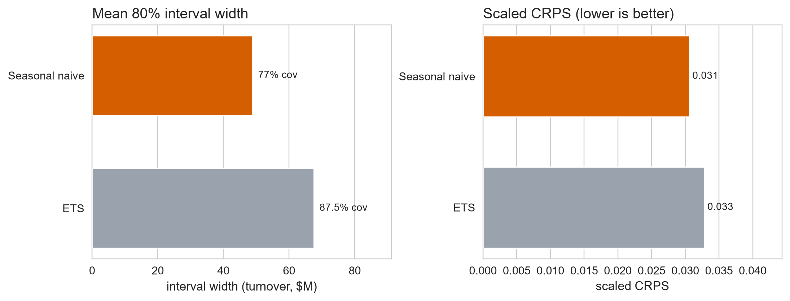

Exponential Smoothing & ETS
Day 3 · Lecture 1 · fpppy Ch 8
2026-09-03
Day 2 ended with a floor. Today we go after it
- Parts A to C: one model, built in three steps, on states you already know
- Part D: the family those three steps belong to, and how it picks a member
- Part E: the same harness Day 2 built, pointed at a model it has never seen
The floor to beat
Seasonal naive, MASE 1.18, scaled CRPS 0.031, over eight rolling folds. Its residuals fail Ljung-Box at \(p \approx 10^{-240}\), so it is beatable.
A. A forecast is a weighted average
Ch 8.1 · Simple exponential smoothing
Your benchmarks are two ends of one dial
Naiveall the weight on \(y_T\) somewhere in betweenrecent counts more, old still counts Meanequal weight on every \(y_t\)
The naive forecast says the last observation is all that matters. The mean says a point from start of the series matters exactly as much as last point.
Simple exponential smoothing is the dial between them
\[\hat{y}_{T+1|T} = \alpha y_T + \alpha(1-\alpha) y_{T-1} + \alpha(1-\alpha)^2 y_{T-2} + \cdots\]
The weights shrink geometrically as you go back.
\(\alpha\) near 1
Fast to react. Almost the naive forecast.
\(\alpha\) near 0
Slow and smooth. Approaches the mean.
The same model, written as a state you update
Two lines, and the first one is the whole model:
\[\ell_t = \alpha y_t + (1-\alpha)\ell_{t-1} \qquad\text{(level)}\] \[\hat{y}_{t+h|t} = \ell_t \qquad\text{(forecast)}\]
\[\begin{aligned} \ell_t &= \alpha y_t + (1-\alpha)\,\ell_{t-1} \\ &= \alpha y_t + \alpha(1-\alpha)\,y_{t-1} + (1-\alpha)^2\,\ell_{t-2} \\ &= \alpha y_t + \alpha(1-\alpha)\,y_{t-1} + \alpha(1-\alpha)^2 y_{t-2} + (1-\alpha)^3\,\ell_{t-3} \end{aligned}\]
\(\ell_t\) is the state: what the model believes the series is worth right now.
\(\alpha\) is fitted
Pick the \(\alpha\) and the starting level \(\ell_0\) that minimize the sum of squared one-step errors on the training data:
\[\text{SSE} = \sum_{t=1}^{T}\left(y_t - \hat{y}_{t|t-1}\right)^2\]
SES on its own gives you a flat line
One state, and it is a level. There is nothing in this model that knows the series is growing.
B. Trend: a second state
Ch 8.2 · Holt’s linear trend, and damping it
Holt keeps two numbers
Think of Holt as maintaining two pieces of information:
\[\boxed{\text{What is the series worth right now?}} \;\longrightarrow\; \ell_t\]
\[\boxed{\text{How fast is it changing?}} \;\longrightarrow\; b_t\]
\[\text{future value} \;\approx\; \text{current value} + (\text{rate of change}) \times (\text{time ahead})\]
A second state gives the forecast a slope
\[\ell_t = \alpha y_t + (1-\alpha)\;\boxed{\,\ell_{t-1} + b_{t-1}\,} \qquad\text{(level)}\] \[b_t = \beta^*(\ell_t - \ell_{t-1}) + (1-\beta^*) b_{t-1} \qquad\text{(slope)}\] \[\hat{y}_{t+h|t} = \ell_t + h b_t \qquad\text{(forecast)}\]
Put \(h = 1\) in the last line, one step earlier: the boxed term is the forecast Holt already made for \(y_t\).
\[\hat{y}_{t|t-1} = \ell_{t-1} + b_{t-1} \qquad\Longrightarrow\qquad \ell_t = \alpha\,y_t + (1-\alpha)\,\hat{y}_{t|t-1}\]
That is the SES level equation unchanged: step from what you predicted towards what you saw. Only the prediction learned a slope.
Holt adds a slope but not a December

Better, and still wrong in an obvious way.
Extrapolate a straight line far enough and it lies

At \(h = 60\) the two disagree by about 38 units, on a series whose last observation was 393.
Damping turns the slope sum into a geometric series
\[\hat{y}_{t+h|t} = \ell_t + h\,b_t \qquad\text{(undamped)}\] \[\hat{y}_{t+h|t} = \ell_t + (\phi + \phi^2 + \cdots + \phi^h)\,b_t \qquad\text{(damped)}\]
With \(\phi < 1\) that sum converges, so the forecast has a ceiling:
\[\hat{y}_{t+h|t} \;\longrightarrow\; \ell_t + \frac{\phi}{1-\phi}\,b_t\]
C. Seasonality: the third state
Ch 8.3 · Holt-Winters
The third state updates like the other two
The forecast gains one term: the matching value from the last cycle.
\[\hat{y}_{t+h|t} = \ell_t + h\,b_t + \underbrace{s_{t+h-m(k+1)}}_{\text{the matching season value}}\]
From Day 2 take the trend out, keep what is left:
\[y_t - \underbrace{(\ell_{t-1} + b_{t-1})}_{\text{trend}} \;=\; \text{the season this period}\]
\[s_t = \gamma\,(y_t - \ell_{t-1} - b_{t-1}) + (1-\gamma)\,s_{t-m} \qquad\text{(season)}\]
Additive or multiplicative is a real choice
Additive season
\(y_t = \ell_t + s_t\)
A season adds the same number of units, whatever the level is.
Multiplicative season
\(y_t = \ell_t \times s_t\)
A season is a fixed percentage of the level.
What the spine does
Its seasonal swing grew from a few units in the 1980s to about 55 by 2018, right alongside the level.
Holt-Winters has the right shape

Flat, then tilted, then the right shape. One state added per slide.
You already built this by hand on Day 2
Yesterday’s fifth model had the same three parts. You chose them. Today they are fitted.
STL + driftyesterday Split the season offSTL decides Pin driftyour choice Pin seasonal naiveyour choice
ETStoday Level, slope, seasonsame three parts \(\alpha, \beta^*, \gamma\) fittedthe data chooses
D. The ETS family
Ch 8.4 to 8.6 · The taxonomy, and the search over it
Three letters name the model
| Error | Trend | Season | |
|---|---|---|---|
| N = none | no trend | no season | |
| A = additive | additive | linear trend | additive |
| Ad = damped | damped trend | ||
| M = multiplicative | multiplicative | multiplicative |
ETS(A,N,N) is SES. ETS(A,A,N) is Holt. ETS(A,A,A) is additive Holt-Winters. Parts A, B and C, renamed.
Two errors, five trends, three seasons: about thirty models, and you have already built three of them.
The error term makes it a model
Holt-Winters gives one number. ETS also says where the randomness enters.
\[y_t = \underbrace{\ell_{t-1} + b_{t-1} + s_{t-m}}_{\text{what the states predict}} \;+\; \underbrace{\varepsilon_t}_{\text{the error}}\]
Now the model can say how likely the data it saw was. That number is its likelihood, and it is what lets you rank models.
It can also draw many futures instead of one line. The spread of those futures is the interval.
AICc picks one member of the family
\[\text{AICc} = \underbrace{-2\log L}_{\text{how badly it fits}} \;+\; \underbrace{2k}_{\text{a toll per parameter}} \;+\; \text{a small-sample correction}\]
A bigger model always fits better, so fit alone would always pick the biggest one. The toll makes it pay for every parameter it asks for.
Lower is better, only the gaps between models mean anything, and AutoETS keeps the smallest.
The season changes the score. The trend does not

Drop the season and the score jumps by hundreds. Add a trend and it hardly moves.
What it picked has no trend term
selected : ETS(M,N,A)
alpha (level) : 0.525
gamma (season): 0.321Multiplicative error, no trend state, additive season. On a series that grew by a factor of eight.
The states it learned are a decomposition

The level climbed without a trend state, and the season grew from a few units in the 1980s to about 55 by 2018.
Two ways to handle a season that grows
Change the data
Transform until the swings hold still, forecast, then transform back. Day 1 used the log.
Change the model
A multiplicative error already works in percentages. This is what AutoETS chose here.
\[w_t = \begin{cases} \log(y_t) & \lambda = 0 \\ (y_t^{\lambda}-1)/\lambda & \lambda \neq 0\end{cases}\]
Box-Cox is one dial across the transforms: \(\lambda = 1\) is none, \(\lambda = 0\) is the log.
E. Scoring it on the Day 2 harness
Ch 8.7 · The Day 2 harness, pointed somewhere new
The harness takes it unchanged
# The only new line is the model on line 4. Everything else is Exercise 2.5.
from coursekit import scoring
sf = StatsForecast(models=[AutoETS(season_length=12)], freq="MS")
cv = sf.cross_validation(df=spine, h=12, step_size=12, n_windows=8,
level=scoring.LEVELS)
scoring.score_cv(cv, "AutoETS", spine) # mase, rmsse, crps, coverage_80Same folds, same metrics, same numbers out. Only the model is new.
ETS wins on one window and ties over eight folds

One window: 0.97 against 1.11. Eight folds: 1.176 against 1.183, inside a fold spread of 0.72 to 2.02.
Its 80% band covers 87.5%

More coverage than promised is not better. It means the band is too wide.
The wider band scores worse

ETS has the wider band on the left and the worse CRPS on the right.
ETS ties on MASE and loses on CRPS
| Seasonal naive | ETS | |
|---|---|---|
| MASE | 1.183 | 1.176 |
| Scaled CRPS | 0.0306 | 0.0329 |
| 80% coverage | 77% | 87.5% |
What to report
A fitted, selected model matched a one-line benchmark on the point forecast and did worse on the interval. Report that.
\(\rightarrow\) Lab E · Fit ETS, then score it honestly
Open labs/03_day3_models_and_orchestration.ipynb
| 3.1 | Fit ETS and read what it picked | 12 min |
| 3.2 | Eight folds, and the coverage surprise | 18 min |
| 3.3 | Damped against undamped (optional) | 10 min |
40 minutes. The notebook carries the instructions; work down it in order.
3.2 is the one that produces a result. It scores ETS against the floor over the same eight folds. Do not skip it.
Lecture summary
- One update rule, applied to level, then slope, then season
- The error term turns a recipe into a model, with a likelihood and intervals
- AICc picks a member of the family; it picked one with no trend state
- The Day 2 harness scored it unchanged, and the floor held on CRPS
Every parameter today was fitted from the data, and you can still name all of them. This afternoon a framework fits a zoo of models for you, in one call.